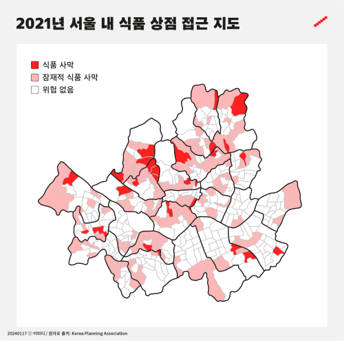

통계청이 내놓은 농림어업총조사를 분석해본 결과 2020년을 기준으로 전국 행정리 3만7563개 가운데 소매점이 하나도 없는 마을은 2만7609곳인 것으로 파악됐다. 비율로만 따지면 농촌마을 내 식료품을 살 만한 점포가 없는 곳이 전국에 73.5%에 이른다.

대한민국 내 식품 사막 현황은 농촌 지역의 고령화와 도심 내 저소득층 밀집 지역에서 두드러지게 나타난다. 농촌경제연구원과 통계청 등의 자료에 따르면, 고령화가 심한 농촌 지역에서는 소규모 상점의 감소와 교통 불편으로 인해 신선식품 접근이 어려워지고 있다. 서울이나 대구 등 대도시에서도 일부 저소득층 지역이 식품 사막에 해당하며, 특히 편의점이나 소규모 슈퍼마켓에만 의존하는 경우가 많아 영양 불균형 문제도 함께 대두되고 있다. 위의 사진을 보면 서울 내 식품 사막 지역 및 위험 지역이 매우 많이 차지하고 있는 것을 확인할 수 있다.